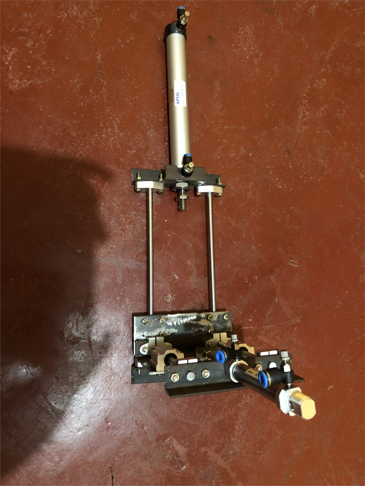
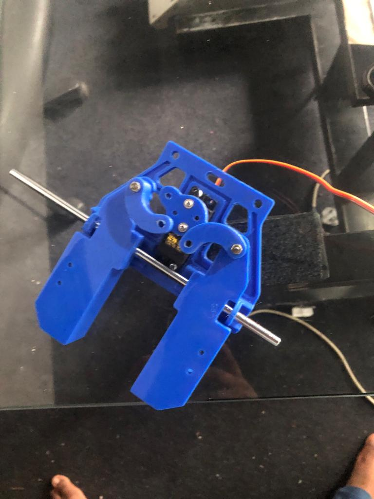
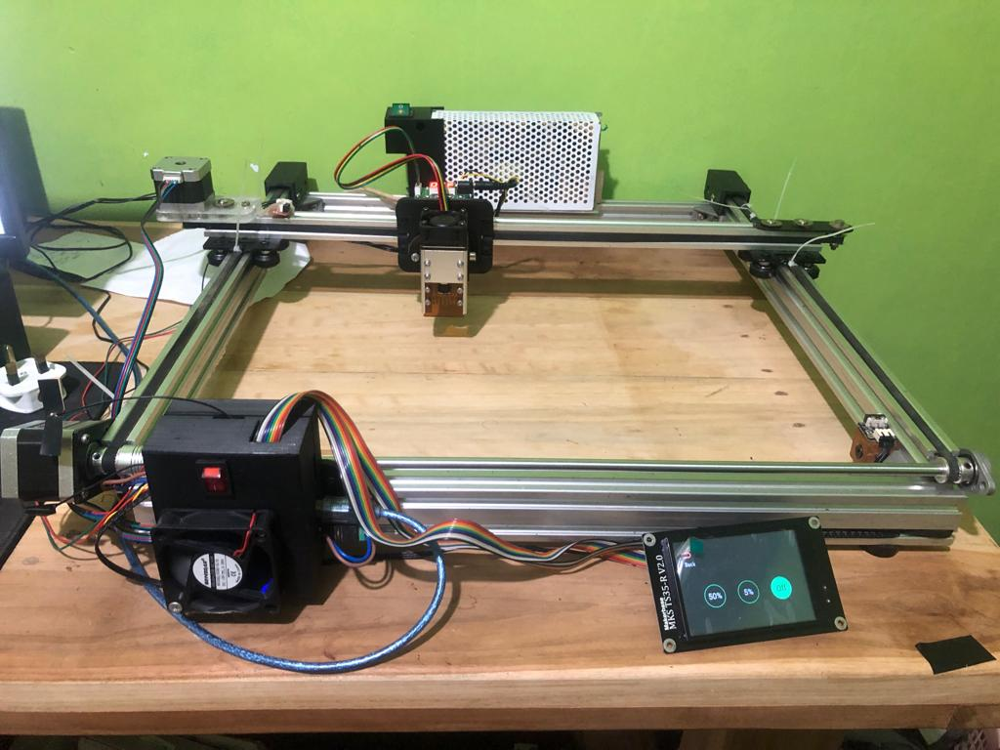
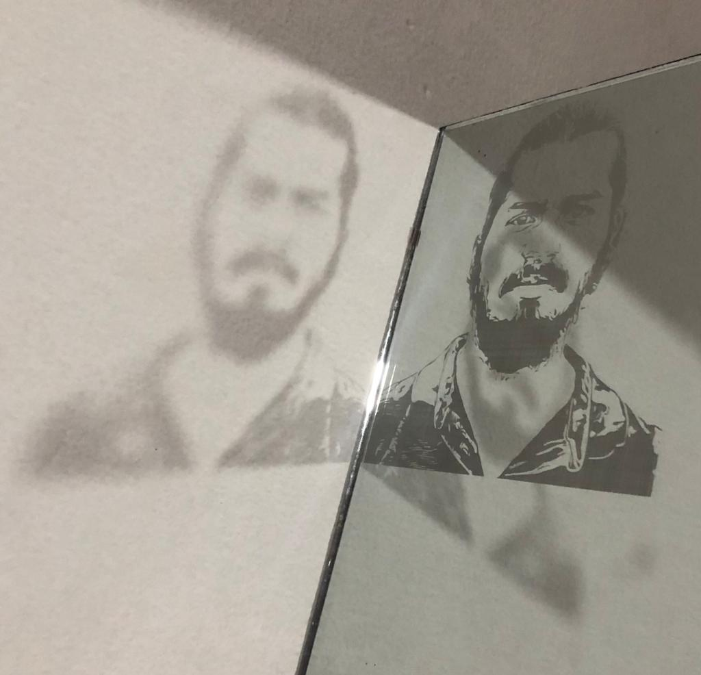
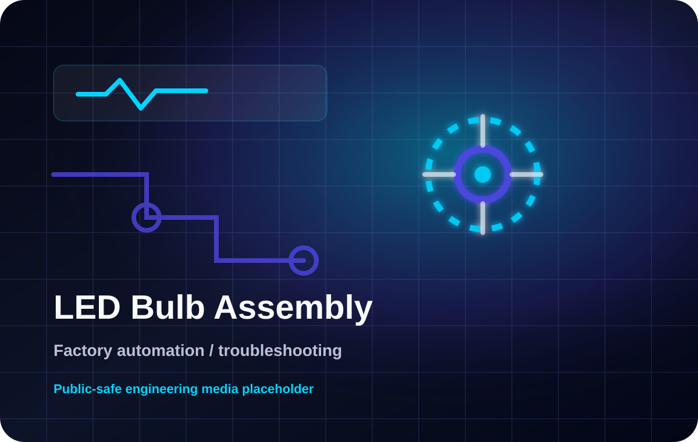
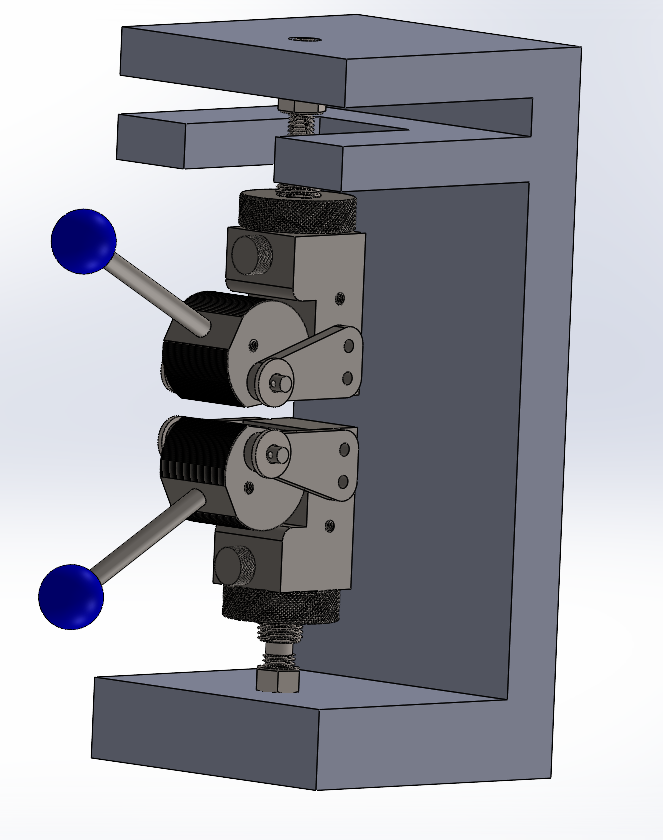
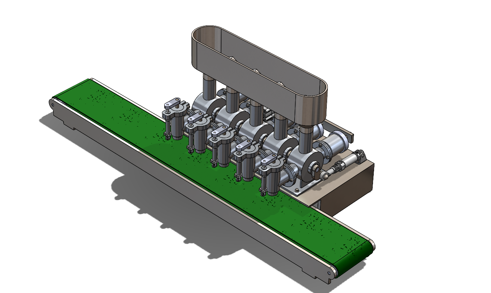
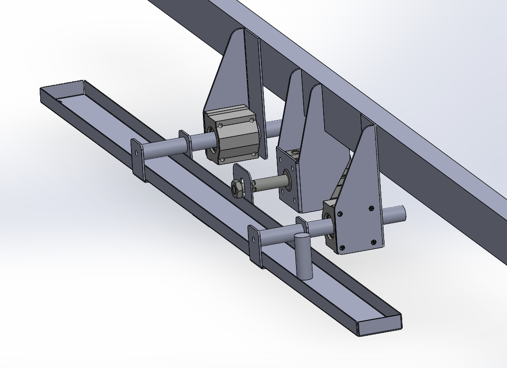
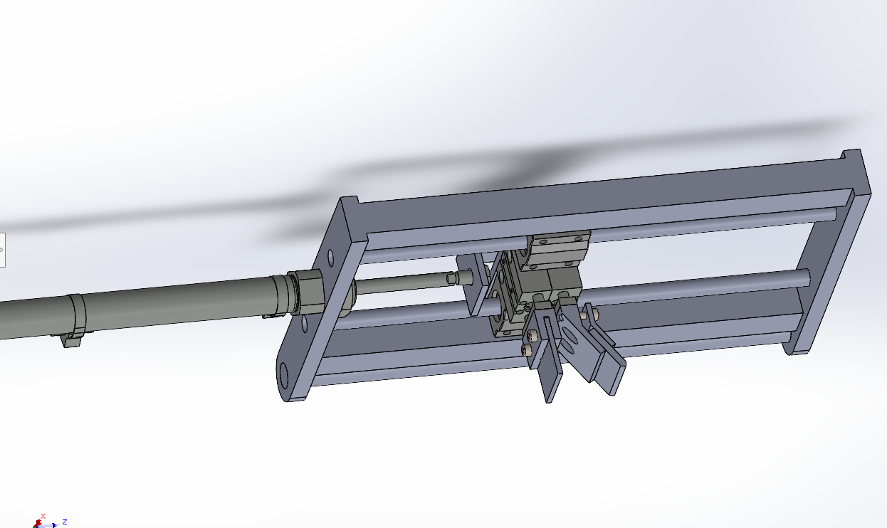
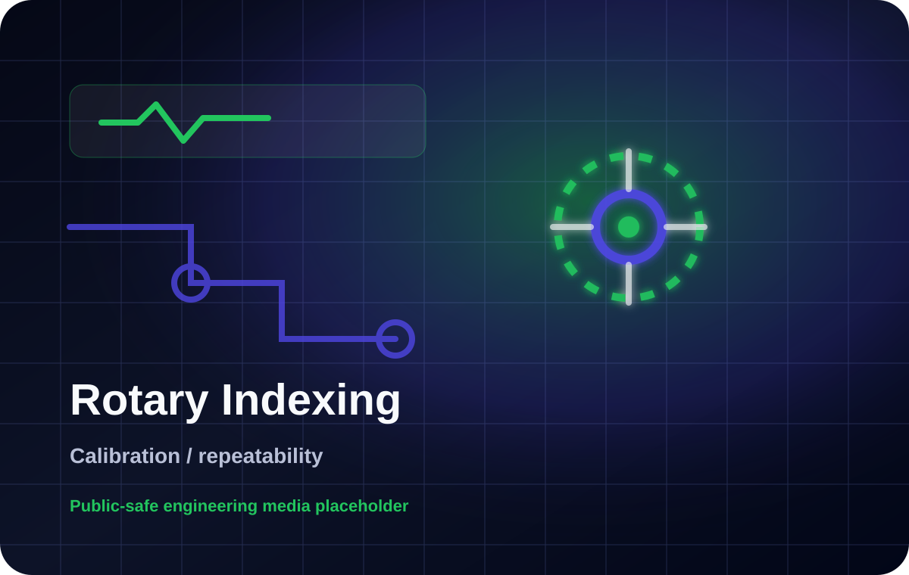

project / automation
Pneumatic Wire Stripping Machine
Public-safe photo of the pneumatic mechanism developed for a controlled, repeatable wire-stripping cycle.
Engineering in Practice
Browse public-safe images by category. Select any image to view it at full size.
Privacy: Confidential drawings, PLC logic, customer information and production data are excluded.
Browse the available images by category.

project / automation
Public-safe photo of the pneumatic mechanism developed for a controlled, repeatable wire-stripping cycle.

image / printing
Public-safe prototype image showing mechanical fit checks and iterative part development.

image / machine
Personal machine build showing motion hardware, control layout and practical assembly work.

image / machine
Public-safe test output from personal engraving experiments and process tuning.

diagram / fixtures
Generic diagram used for company-sensitive fixture work where real CAD data must stay private.

diagram / automation
Public-safe visual for PLC, sensor, pneumatic and mechanical fault-isolation workflows.

diagram / software
Generic ERP/KPI workflow visual without company databases, source code or private screenshots.

diagram / CAD
Simplified visual language for machine concepts without exact drawings or dimensions.
project / SCADA
Public-safe project reference retained without publishing the client-specific interface screens.

project / mechanism
CAD assembly study for a compact gripping mechanism, showing linkage layout and component integration.

project / automation
Machine concept showing container positioning, multi-nozzle filling layout and production-flow thinking.

project / machine design
Mechanical concept developed to guide and collect process drips while supporting cleaner machine operation.

project / machine design
CAD concept showing frame, guided motion and mechanism arrangement for a compact screen-printing machine.

diagram / calibration
Non-confidential alignment visual for explaining repeatability and setup thinking.